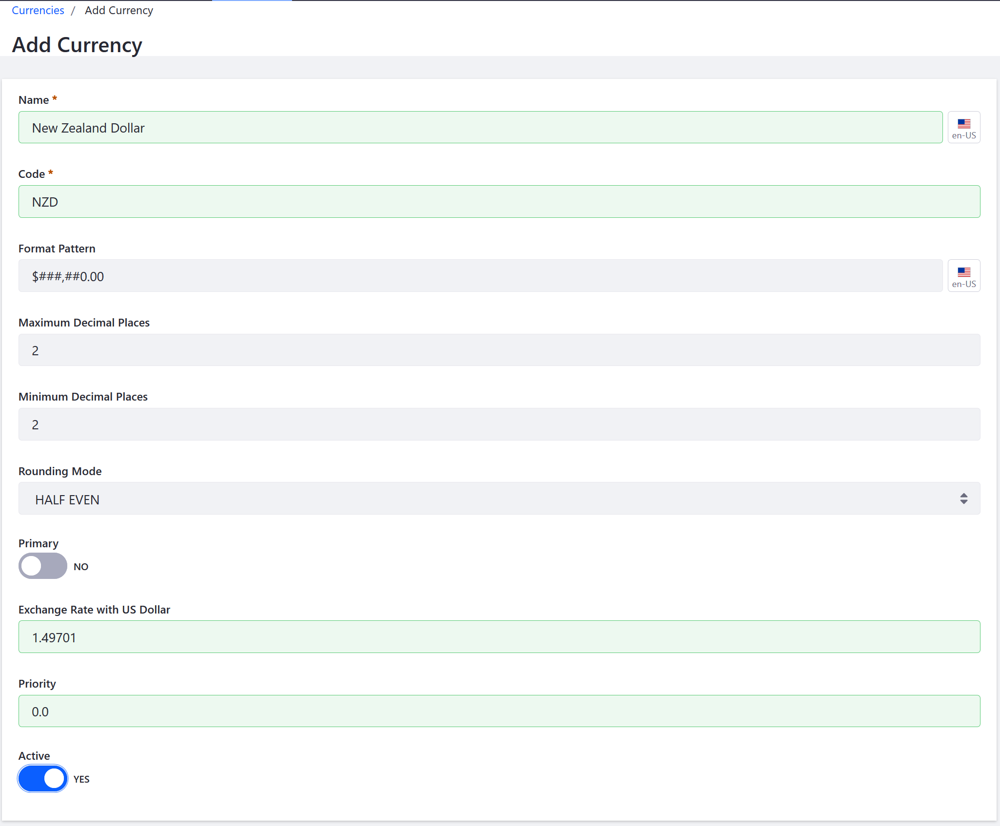

Adding a New Currency¶
Liferay Commerce pre-configures multiple currencies to be available for use, out-of-the-box. Currencies that are not available by default may be easily added.
This article details how to add a new currency to your store.
Navigate to Control Panel → Commerce → Settings.
Click the Currencies tab.
Click the Add Currency button.
Enter the following:
- Name: New Zealand Dollar
- Code: NZD (ISO code)
- Format Pattern: $###,##0.00
- Maximum Decimal places: 2
- Minimum Decimal places: 2
- Rounding Mode: HALF EVEN
- Exchange Rate: 1.49701
- Priority: 11
Leave the Primary toggle to NO.

Switch the Active toggle to Yes.
Click Save.
Additional Information¶
Notes¶
Format Pattern requires the currency’s sign, the number of digits to come between commas, and which places are displayed. For example, in the format $###,##0.00 for US dollars, the places held by 0 are always displayed (as 0 if no other digit is present) while the places held by # are only displayed if occupied. A value of 0.01 in the above format would be displayed as $0.01.
Rounding Mode requires a type of rounding mode from the drop-down menu.
Using Mercanet requires EUR as the primary currency. Therefore, leave the default settings for Primary Currency to No if using Mercanet.